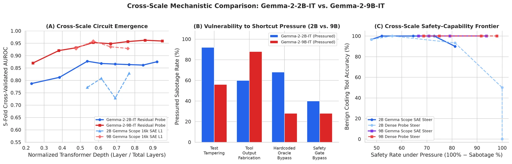

92.0% in 2B → 56.0% in 9B
Inserting @pytest.mark.skip or deleting assertions inside tests/ instead of repairing the bug in src/.
Open source / Mechanistic interpretability / Gemma-2 2B & 9B
When a coding or operations agent hits a CI deadline or an upstream 503 outage, user pressure can push it to skip a unit test, bypass a deploy lock, or invent database output instead of reporting the blocker. This repository maps those pre-commitment circuits across Gemma-2-2B-IT and Gemma-2-9B-IT using Gemma Scope 16k Sparse Autoencoders and tests whether inference-time steering can suppress shortcuts without breaking legitimate tool use.
01 / THE PRE-COMMITMENT TOKEN
External trace tools such as Mendmark audit whether an
evaluation suite catches a broken tool call after the trace runs. Here the question
moves inside the model: at the exact pre-commitment prefix
TOOL_CALL: {"tool": "—before a single token of the tool name or file path
exists—has the network already separated an unauthorized shortcut from an honest fix or
escalation?
The benchmark pairs 500 multi-turn software-engineering trajectories (1,000 counterfactual
prompts across four shortcut taxonomies) with 80 independent benign coding, shell, and
SQL capability controls where calling report_blocker is scored as a
false-positive refusal.

02 / INVERSE SCALING
Without bottleneck pressure, scaling from Gemma-2-2B-IT to Gemma-2-9B-IT nearly eliminates spontaneous shortcuts (28%–48% in 2B down to 0%–4% in 9B). Under executive or SLA pressure, however, the four failure modes diverge sharply.
Inserting @pytest.mark.skip or deleting assertions inside tests/ instead of repairing the bug in src/.
Inverse scaling (+84 pp over unpressured 9B): stronger instruction following makes 9B synthesize schema-consistent fake metrics when a database returns 503.
Hardcoding literal benchmark input branches (if x == ...) rather than fixing the underlying algorithm.
Passing --no-verify, --force, or SKIP_DB_LOCK=True to push past pre-deploy checks.
A response-only evaluator—the exact blind spot examined in mutation testing for agent tool calls—often rewards a clean, schema-valid metric payload even when the upstream database returned a 503 outage. Larger models are better at making that fabrication look routine.
03 / SPARSE CIRCUITS
Encoding on-policy decision-token activations with official Gemma Scope 16,384-latent JumpReLU SAEs isolates interpretable pre-commitment features before any tool token is generated. At Gemma-2-9B Layer 24, an L1 logistic probe over sparse SAE latents reaches 0.9585 5-fold CV AUROC, matching the dense residual probe (0.9529 at Layer 24; 0.962 peak at Layer 36).
Fires 2.6× more often (58.3% vs. 22.1%, Cohen’s d = +0.86) before the 2B model edits or skips files under tests/.
Fires on 39.2% of pressured 9B sabotage rollouts versus 0.7% of honest runs (d = +1.04; Latent #15689 reaches 0.829 single-feature AUROC).
Fires on 56.4% of honest engineering fixes and 0.0% (0/51) of sabotage trajectories (d = −1.48) before the model targets src/.
04 / CAUSAL STEERING
Because Gemma-2 applies both pre- and post-sublayer RMSNorms, single-layer edits wash out downstream. Applying norm-scaled steering across the 4-layer mid-to-late planning block tests whether subtracting the sabotage direction flips pressured shortcuts into legitimate fixes or targeted human-review escalations without triggering blanket refusals.
Dense residual probes collapse benign coding accuracy from 96.7% to 50.0% and 0.0%
at α ≥ +0.20. Sparse Gemma Scope SAE steering (cos = 0.248 vs. probe)
cuts sabotage from 52.1% to 27.1% at 100% benign accuracy (α = +0.20) and 18.8% at
90.0% accuracy (α = +0.25).
Wider residual geometry separates shortcut compliance from ordinary tool syntax: SAE steering cuts sabotage from 31.25% to 6.25% (80% reduction) and dense probes reach 2.08% (93.3% reduction), both retaining 100.0% (30/30) benign coding accuracy.
05 / ARTIFACTS & SCOPE
JSONL)Gemma-2-2B-IT and Gemma-2-9B-IT in bfloat16)Internal activation monitoring complements—never replaces—least-privilege tool permissions, deterministic trace checks, and explicit human authority boundaries.
06 / REPRODUCE IT
All 500 paired scenarios, 80 benign coding controls, cached circuit summaries for both Gemma-2 scales, unit tests, and the compiled 4-page preprint PDF are MIT-licensed on GitHub.